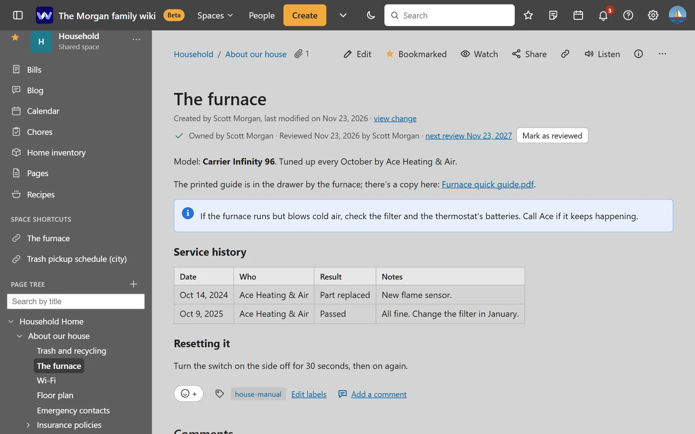
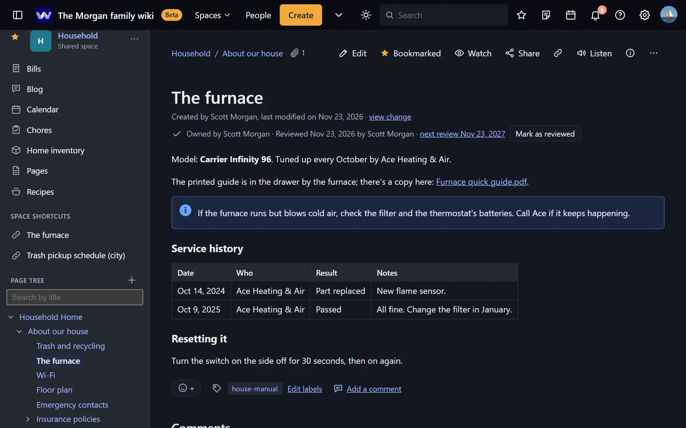

How we do things
Checklists, how-tos and the steps for new staff, in pages anyone can find from a phone. Owners and review dates keep them from going stale, and checklists can be ticked off right on the page.
DesktopWiki gives you spaces, a page tree and a familiar visual editor, the way classic team wikis worked, plus a password manager for everyone's logins. You install it on one PC, and everyone else opens it in a browser, on a phone or another computer, to read and edit pages.
Install on one Windows PC. Everyone else uses a browser. The PC that holds the wiki needs to stay on and awake while people use it. To reach it from outside your home or office too, see Away from home.


Look around first: open the demo wiki from setup or the tray icon. It's the Morgan family's wiki, with their spaces, pages, pictures, files and password vaults, and you can view it as each of them.
For Windows 10 (version 1809 or later) and Windows 11, 64-bit. No server, no database to install and no cloud account. Your wiki lives in a single file you can back up by copying it.
If you've kept notes in a team wiki at work, you'll know your way around: spaces, a page tree on the left and an editor that looks like the page.
For example, the furnace: its manual, its warranty and every service visit on one page, a reminder when the filter is due, and the model number at hand when the repair person calls. Do the same for the fridge, the car or anything else in the house, and it’s all in one place for everyone in the family.
The furnace, the fridge, the TV and the car, with model and serial numbers, receipts, manuals, photos and warranties. Upkeep on a schedule with a Done button, a reminder when it’s due or a warranty is about to end, and an insurance list to print after a fire or theft.
The family’s recipes, imported from any recipe site or typed in, scaled to how many are eating, with a cooking view that keeps the screen on. Plan the week, then put its ingredients on a shared shopping list sorted by aisle, made to tick off on a phone in the store.
The mortgage, the electric bill and the streaming services, with who pays each one and when it’s due. Autopay bills mark themselves paid, the rest get a reminder a few days ahead, and you see what the month costs and what every subscription costs a year.
A shared space for each topic, such as Household, Recipes or a project, plus a personal space for everyone. Each has a home page, a page tree, its own shortcuts and a picture. Start one blank, or as documentation, a knowledge base or a team space, and keep it to yourself until you're ready to share it.
A visual editor like the one you know from work: headings, text color, lists, tables with merged and colored cells, code blocks, quotes, and info, note, warning and tip panels. Add dates, status labels, emoji and anchors, with the same typing shortcuts and find and replace. No markup to learn, though you can paste Markdown.
Put text in two or three columns, with or without a sidebar, and as many sections of columns as a page needs, with ordinary text between them. On a phone the columns stack.
What you type is kept as a draft and comes back if you close the tab. Preview it or compare it with the published page, then save it with a short note on what you changed, or without telling watchers about a small fix.
Insert a table of contents, the pages under this one, the space's page tree, its recent updates and contributors, the pages with a label, or another page's text. Each is worked out whenever the page is shown, from what the reader may see.
Start a page from a template: Meeting notes, Decision, How-to, Troubleshooting and Retrospective come built in, and admins keep their own for one space or every space. A {date} in the title fills in the day.
Packing lists, chores, shopping: check items off right on the page, no editing needed. Check all and Uncheck all reset a list, a table of boxes or the whole page, and Undo puts the check marks back.
Attach files to any page, or paste and drop pictures straight into the text. Size, center, frame and caption a picture, or show a page's pictures as a gallery. Upload a file again and the earlier version is kept.
Tag pages and blog posts with labels, then click one to see every page that has it, in one space or all of them, with related labels. A page can list the pages with a label, kept up to date.
Talk about a page underneath it, with replies. Type @ and a name in a page or a comment, and that person hears of it under the bell, or mention a whole group at once.
Select a few words in a page and comment right on them. The words are marked, the conversation sits beside the page, and Resolve tucks it away when it’s settled.
Type a flowchart and see it drawn, or sketch a floor plan or a seating chart right in the page. Light and dark, and no internet needed.
A big board for planning together: sticky notes, shapes, arrows that stay on what they join, titled sections, stickers and zoom, with templates for a brainstorm, a Kanban board, a retrospective or the week’s plan.
A table of entries with fields of their own (dates, choices, people, files), shown as a table, a board you drag cards across, cards or a timeline, and linked to entries in other databases.
Make a deck as a page: each heading starts a slide. See them as slide cards and present full screen, or show any page as slides.
The kids can read a page but not change it? They can suggest an edit, and a parent sees what would change and applies it, or declines with a reply.
Ask people to approve a page as it is now, or to confirm they’ve read the handbook or the house rules, and see who has and who hasn’t.
When a page is made or gets a label, add a label, tell people, move it or set its status, in one space or across the wiki.
With your own mail server set up, people can have their notifications by email as they happen, or one digest a day.
Turn it on and every save is kept, or just the last 7, 30 or as many as you choose, each with its note on what changed. See who changed what, compare any two versions side by side, and restore an older one.
Import a Confluence space export or a whole-site backup, every space at once: pages, blog posts, attachments, comments, labels, templates, profile pictures, authors and dates, with as many earlier versions as you choose. Layouts, panels and macros come across, and links between the spaces are kept. Anything that can't be converted is kept as a marked placeholder, never dropped. Try it for a few days, then import again: each space replaces the one that came in before, or erase the wiki's spaces and start over.
A Word document becomes a page, a spreadsheet or CSV file a page of tables, and a folder or .zip of documents, Markdown and web pages a tree of pages. Drop a file into a page to put in what it holds, and show a PDF right in the page.
Print a page, or a page with every page under it, with a contents list first and the comments if you want them, or save it as a PDF. It always prints black on white, whatever your theme. Download a page as a Word document or as Markdown, or a whole space as a .zip of web pages or Markdown files, with its blog and attached files. Everyone can export what they can read, and DesktopWiki can import the .zip back.
Pick Keep offline on a page, and your phone or laptop can still read it with no signal, on a trip or when the wiki’s PC is off: the camping checklist, the furnace page, the babysitter’s notes. They’re brought up to date whenever the wiki can be reached.
Copy a link to any heading to send someone straight to that part of a page. Click a picture to see it full size and swipe through the others, and hover over a link to another page to see what it is before you go.
Results as you type, across every page you can see or in one space, with the matching words marked. “Boil” finds “boiler” and “boiling,” in pages, comments and inside attached PDFs and text files, even scanned ones.
Watch a page or a whole space, and the bell tells you when someone changes it. Pages you make or edit are watched for you. Turn on notifications to hear about @mentions, replies, comments and shared pages on your phone or in your browser, even with the wiki closed, or as Windows notifications on the wiki’s PC. You choose what sends one.
Send a page to the people or groups who should read it, with a short note. It shows up under their bell, with the link one click away.
Give the babysitter or the house-sitter a link to one page, no account needed. It shows the page as it is now, read-only, with a password and an end date if you want, and stops the moment you say so.
Give the medical, insurance and emergency pages an owner and a review every few months. The owner is reminded when one is due, and readers see when the page was last checked.
A homepage section lists the pages you own that are overdue or due in the next month, with Mark as reviewed right there. A space’s admins see every reviewed page in one sortable list.
Every page lists the pages that link to it, so you know what depends on it before you change it. A broken-links report finds links to pages in the trash or deleted for good.
Give each insurance policy, appliance or car a page with a small table of its details, and see them all in one sortable table that keeps itself up to date.
A directory of everyone on the wiki, with a profile each: picture, position, department, location and a few words about themselves, plus what they've worked on lately. Admins make groups, such as Kids or Parents, each with its own page.
Post news and stories to a space's blog, newest first, with the author and the date. Posts have history, attachments and search like any page.
Calendars in each space, with every event in the colors of the people it's for. Birthdays from profiles, reminders on the bell, and iCal both ways: see it on your phone or in Google Calendar, and bring in the school's calendar.
@mention someone in a checklist item, add a date, and it's their task, or use Add a task on My tasks. Everyone sees theirs on My tasks and their homepage, the bell reminds them on the day, and kids can check off their own chores on pages they can only read. A Task report lists who has what, as in Confluence.
Chores that take turns on the days you pick, with stars for each one done. Kids tick off their own, parents approve them, a missed turn moves on to the next person, and the stars buy rewards the family sets: pick the Friday movie, a later bedtime.
Jot something down before it slips away: your own notes in six colors, saved as you type. Nobody else sees them, admins included, unless you share a note, or all of them, with people you pick. New note in the tray icon’s menu opens a fresh one.
Bookmark pages to come back to, plus recently worked on, recently visited and starred spaces, and an All updates feed of what changed across the wiki.
The same wiki works for an office, a shop or a club. Choose A team or business when you set it up, and bills, chores, the home inventory and recipes stay out of the way. Turn any of them back on later in Configuration.
For example, a bakery: the opening checklist, the weekend schedule, the suppliers and when to order, and what to do when the register freezes, in a space for the people who work there. The demo wiki has one, the Bakery team.
Checklists, how-tos and the steps for new staff, in pages anyone can find from a phone. Owners and review dates keep them from going stale, and checklists can be ticked off right on the page.
Each space has its own people and groups, to view, edit or run it. Staff see the team’s pages, and a page can be locked to the people you pick.
Several people can edit the same page at once and see each other’s changes as they type. Comments, @mentions and suggested edits work the way they do in the wikis people know from work.
Bring your spaces, pages, attachments, comments, templates and permissions from Confluence Server, Data Center or Cloud, then keep it all on a PC in your office.
The Wi-Fi, the supplier portal and the payment terminal’s account in a shared vault for the people who need them, encrypted in the browser, with a Private vault for everyone’s own.
Every change to settings, accounts and spaces in one list you can filter and download, and an access audit that shows who can open each space and why.
Team for up to 18 people and Business for up to 60, by the year, for the whole wiki rather than per person. The beta is free.
Remember making your own start page, back when every browser opened to one? Everyone in the wiki gets one again: their favorite sites in one place, a search box ready to type in, and pictures that change with the holidays. Make it your browser's start page, at an address such as /start.
Your homepage, with a picture →
Sections of links, each group with a short tag in front, in the style you like: a compact grid, a classic 2003 portal, columns of boxes, colored tiles, cards, or a minimal page with a big clock. Drag things where they belong, or start from a list of popular sites.
Add the weather where you live, news feeds, a countdown to birthdays and holidays, clocks in other time zones, a to-do list, a note, a picture and what’s new in the wiki, plus your calendar, your tasks and the shopping list.
A Today section shows what’s on: today’s events, your tasks, birthdays this week, bills to pay, what’s for dinner and the mentions you haven’t read. On a quiet day it says so and names what’s next.
Start from Family hub, Morning news, Work desk, Student, Minimal, Desktop gadgets, Home network, Welcome banner or one for a guest or babysitter, previewed before you pick. Lay it out in one, two or three columns, and put a picture behind the page if you like.
Post a note at the top of everyone’s homepage: “Dinner at Grandma’s on Sunday.” Each person dismisses it when they’ve read it. An admin’s own homepage also starts with a line on the wiki’s health: backups, updates and disk space.
A Wi-Fi section shows the network’s name and password with a QR code a phone’s camera joins with. Start from the template for a guest or babysitter: Wi-Fi, emergency numbers, house rules and a clock.
Press / on your homepage and type a few letters to open one of its links, or type !w, !a or !g and a few words to search Wikipedia, Amazon or Google.
A ping monitor checks Cloudflare and Google, or any addresses you pick, every few seconds and draws a live graph, with each one’s time in green, orange or red. When the internet seems slow, one glance tells you whether it’s your network or the rest of the world.
An analog clock with a ticking second hand, the date as a calendar page, and the weather in small: the sky, the temperature and today’s high and low, with a moon on a clear night.
Put words across the top in place of a picture: the wiki’s name, a family motto or “Happy birthday, Mom”, lettered in Google’s colors, harvest colors, a rainbow or pastels, in the font and size you like.
Up to ten each, side by side in tabs: one for home, one for work, one for school. Each has its own look, its own address and its own say on who can see it.
Import your browser's exported bookmarks, or the start page you made yourself years ago, from its file or from its web address: each heading becomes a section and its links come along. Nothing is saved until you say so.
Put a banner picture across the top, and pictures beside it that show on the days you choose each year, such as a tree from Christmas to New Year’s or pumpkins for Halloween. Each picture can open a link.
Search Google, Bing, DuckDuckGo or the wiki, with the box at the top, under the title or at the bottom. It's ready to type in as soon as the page opens.
A homepage is yours alone unless you share it with people you pick, with everyone in the wiki, or with anyone who can open the wiki's address. Give it its own theme, or let it follow yours.
Save your homepage as one file that opens in any browser, with its pictures and look inside it: a copy to keep, or a start page for a computer that isn’t on your network.
A This wiki row puts what you worked on lately, your starred spaces and your bookmarks one click away, under your own links.
Put the widgets you reach for on a bar across the top, like a utility bar: need the calculator? Click its icon. Add buttons that open programs too, such as the Windows Calculator.
Turn a spare tablet into the family’s kitchen screen: your homepage in large type, kept up to date, a photo slideshow when nobody’s touching it and a dim clock at night.
Vaults keep each person's logins, cards, documents and two-step codes, and the ones the family shares. Everything is encrypted in your browser before it reaches the wiki's PC, which never holds it in a form it can read.
Everyone gets a Private vault. Shared vaults, such as Family or Streaming, go to the people and groups you choose, each to view, edit or manage. Add a guest, such as a babysitter, who sees only the one vault you share with them and nothing else in the wiki.
Items are locked with your vault password and a Secret Key that stays on your devices (AES-256 and Argon2id). The wiki's PC and its backups only ever hold scrambled data. Your Emergency Kit keeps what you need to get back in.
Logins, credit cards, bank accounts, passports, Wi-Fi, software licenses and more than a dozen other kinds, with tags, favorites, a password generator and attached documents. Earlier versions and old passwords are kept, and a Wi-Fi item shows a QR code a phone can join with.
Keep a site's one-time codes with its login and see each code with the seconds it has left. Scan the site's QR code from a screenshot, your screen or a phone's camera, or from the tray icon in one click, and move your codes over from Google Authenticator.
One-time codes from all your vaults on one screen, each with Copy and the seconds it has left. Keep a site’s backup codes with its login and check each one off as you use it.
See which passwords are weak, reused or found in a data breach, which sites offer two-step sign-in you haven't set up, and what's about to expire. The breach check sends only the first five characters of a scrambled form of each password, and an admin can turn it off.
Press Ctrl+Shift+Space, or keys of your own choosing, anywhere in Windows, find a login and press Enter to copy its password. Unlock it with Windows Hello. What you copy stays out of Windows' clipboard history and is cleared after 90 seconds.
In a browser, unlock with a passkey on your iPhone, Android phone or security key instead of typing the vault password. Forgot it anyway? If you allowed it, an admin can help you back in with a new vault password.
Get a reminder before a passport, driver's license or card expires: six months ahead for passports, a month for the rest, and again on the day, on the bell and in Windows. Add a date of your own to any item, every year if you like, such as reviewing your will each January. The wiki learns only the date and what kind of item it is, never what's in it.
Name someone you trust, the vaults they would get and a wait, such as a week. If you're ever in the hospital, or worse, they can ask for access. You're told at once on the bell and in Windows, and can say no. If nobody does before the wait ends, they can open those vaults, to view only.
Import from 1Password, Bitwarden, LastPass, KeePass, KeePassXC, Dashlane, Chrome, Edge and Firefox. Files are read and encrypted in your browser, so plain passwords never reach the wiki. Export to a file whenever you like.
Send someone a copy of an item with a link that lasts from an hour to 30 days, or for one view, for anyone or only people who sign in to the wiki. The wiki can't read the copy: its key is only in the link. Each vault shows who added, changed, shared or copied what.
Take a photo of a card’s front and back with your phone’s camera, right in the item: a credit card, a driver’s license, a passport or an insurance card. They’re encrypted with the rest of the item.
An admin makes item types for the whole family, such as Vehicle, Pet, Insurance policy or Medication, with the fields you want. Everyone finds them in New item.
The wiki’s PC is on all the time anyway, so it watches the rest of the house too: the router, the internet, the NAS, the printer and the cameras, each with a green, yellow or red light. When something goes down, the bell tells you, and the family can see for themselves whether it’s the internet or just their laptop.
The home network, with a picture →
Check each device by ping, a port, a web address (its answer, a word on the page, when its certificate ends) or a DNS server, every 30 seconds to 15 minutes, with its response times, uptime and outages.
The Internet check says what broke: the router, the internet line or DNS. It lists each month’s outages and how long they lasted, ready to read out when you call the internet company.
Watch a kid’s PC, a game console or the TV for usage: no alerts, just when it was turned on and off, day by day for the last 7 or 30 days.
A backup job or script opens its own link when it’s done. If it doesn’t check in on time, or says it failed, you hear about it.
Down and back again on the bell, held in quiet hours unless a device is important, never during a maintenance window, and not for every device behind a router that’s down.
One plain line: everything is working, or the internet is down and what to try. Open it to everyone at home without signing in, if you like.
A Network line in the tray icon’s menu, a Network status section on your homepage, and tools that let your AI agent answer “what’s down?”
Everything stays on your PC, locked down the way you want, in your colors and your language.
Everyone signs in with their own account as an admin, editor or reader. Each space has its own permissions for people and groups, and a page can be locked so only the people you choose can see or edit it. A lost password, even an admin's, can be reset on the wiki's PC.
Sign in with your password and a code from an authenticator app on your phone, with recovery codes for when you can't reach it. Admins can require it for everyone, and the tray icon can ask for an admin's code before anyone changes how the wiki runs.
Daily or weekly backups to the folder or drive you choose, safe to make while people edit. Each is encrypted (AES-256), so one on a USB drive or in the cloud can't be read without your wiki's recovery key. Restore one from Configuration in a couple of clicks.
Pick your own theme, light or dark: Ocean, Forest, Plum, Graphite, high contrast, or holiday colors that change with the season. Make your own with a live preview, share it as a file, and give the wiki its own logo.
Give the wiki a free desktopwiki.net address with one click, and every phone, tablet and PC opens it with no warning and nothing to install. Its Let's Encrypt certificate renews by itself. Have a certificate for your own domain? Upload it instead.
English, German, French, Spanish, Italian, Brazilian Portuguese, Dutch, Polish and Swedish. The admin picks the wiki's language and everyone can pick their own. Dates and numbers follow it, and your pages stay as you wrote them.
See what's in the wiki and how it's used: who writes, edits and reads the most, the most read pages and the ones nobody has touched for a long time. Admins choose who else may see it, and nobody sees pages they can't open.
Connect an AI app such as Claude Code with a key of your own, and it can find, gather and sum up what's in the wiki for you. It sees only what you can see, never your vaults or the spaces you keep from it, and any change it suggests waits for you to apply or decline.
DesktopWiki runs as a Windows service, so the wiki is on whenever the PC is, even when nobody is signed in. Or run it from its icon in the system tray, while you're signed in. Either way, the tray icon opens the wiki, and a double-click on it opens one window with every setting: the wiki's addresses, how it runs, backups and updates.
It serves the wiki over HTTPS on your network (on ports 80 and 443, so addresses need no port number, or on 8090 when another program has 443), so phones, tablets and other PCs use it from a browser. With a free desktopwiki.net address, devices open it with nothing to install, and a QR code takes a phone straight there. Without one, a setup page with a QR code shows each device how to trust the wiki's own certificate. If Windows calls your network Public, which keeps other devices out, DesktopWiki says so and opens the setting that fixes it.
Pages, history and attachments are all stored in one database file. Backup is copying that file.
DesktopWiki checks for new versions and tells admins, with what's new. One click installs it, or turn on automatic updates and it installs them by itself at night. The installer is signed by EmuKey LLC, and nothing else is run.
Ask a question, suggest a feature or report a bug from inside the wiki: Help and feedback is in your profile menu and the tray icon's menu, with no mail app needed. Add a picture, and an admin can attach the wiki's log. We answer by email, and nothing else from your wiki is sent (what goes).
Open the wiki from your phone at work or on vacation, one of two ways. Both are off until an admin turns them on at the wiki's PC, both use your free desktopwiki.net address so there are no certificate warnings, and each says plainly what it opens up.
Install Tailscale, free for personal use, on the wiki's PC and on each phone or laptop. The wiki gets an away address, with a QR code, that works only on devices signed in to your Tailscale network, at home or anywhere. What it opens up: nothing. Nothing on the internet can reach the wiki, not even its sign-in page.
The wiki asks your router to forward its port (UPnP or NAT-PMP), or shows the steps to do it yourself, and gets a public address that follows your home's address when it changes. What it opens up: the wiki's sign-in page, on its one port, to anyone on the internet, and your home's internet address becomes public in DNS.
From outside your home, only people with two-step sign-in can sign in. An address that gets 10 passwords or codes wrong in an hour is locked out for the next hour. AI agents, setup and the certificate page answer only at home.
DesktopWiki has its names service try to reach the wiki from outside and tells you what it found: it works, the port is closed (with router steps), or your connection shares one internet address with others, as many fiber, Starlink and mobile connections do. Then only the private network app works, and it says so.
Each person's activity shows sign-ins from outside the home with their address, and a right password with a wrong code, which can mean someone else knows it. The tray icon says when the wiki is open to the internet.
Turning either way off removes its address at once, along with the forwarding the wiki asked your router for. A rule you made on the router yourself stays until you remove it there.
DesktopWiki runs on one Windows PC. Everyone else just needs a browser.
Windows 10 version 1809 or later, Windows 11, or Windows Server 2019 or later, 64-bit. About 250 MB of disk, plus room for your wiki and its backups. Nothing else to install: no .NET, no database server.
An administrator account on that PC, because the installer opens the wiki's port in Windows Firewall. Running it as a Windows service needs one too.
Other devices on the same home or office network reach it on ports 80 and 443 (or 8090 if another program has 443; you can change it). Windows must treat that network as Private, not Public. The PC needs to be on and awake while people use the wiki, from home or away.
A current Edge, Chrome, Firefox or Safari, on Windows, Mac, iPhone, iPad or Android. Nothing to install on them.
The beta is free. Download the installer, run it on the PC that will hold the wiki, and setup opens in your browser. Updates install from the tray icon. After the beta it stays free for one person; see pricing for families and teams.